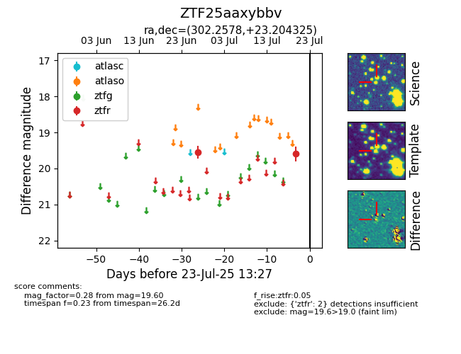

Target ZTF25aaxybbv at 2025-07-23 13:27, see:
FINK: fink-portal.org/ZTF25aaxybbv
Lasair: lasair-ztf.lsst.ac.uk/objects/ZTF25aaxybbv
ALeRCE: alerce.online/object/ZTF25aaxybbv
alt names
ZTF25aaxybbv (ztf,fink)
coordinates:
equatorial (ra, dec) = (302.2578,+23.20433)
galactic (l, b) = (62.4007,-5.27986)
photometry
last ztfr=19.60
2 ztfr detections
